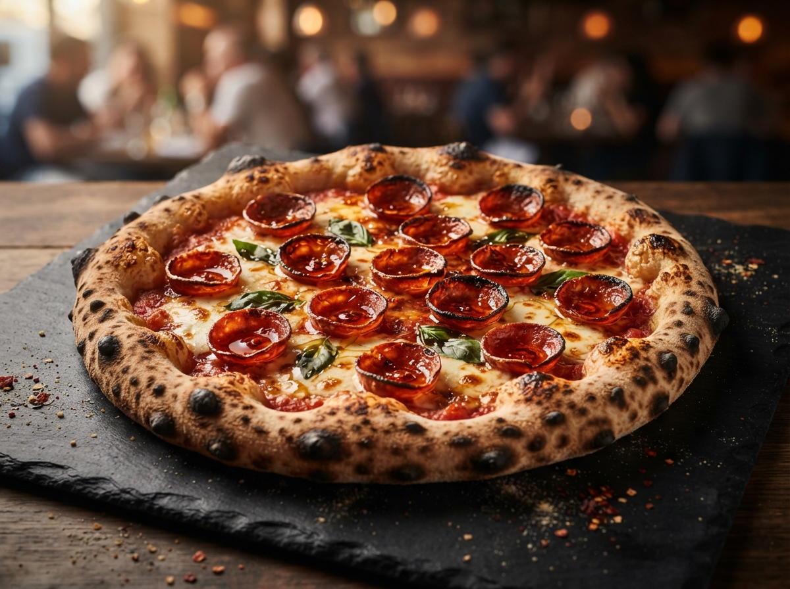

Pizzeria napoletana · dal 2014
La pizza
veramente napoletana.
Impasto lievitato 48 ore, pomodoro San Marzano DOP, fior di latte di Agerola e un forno a legna che non scende mai sotto i 450 °C. Undici pizze, una insalata, fatte come si deve.
— Marco, pizzaiolo


la carta
Undici pizze,
una insalata.
Tutto fatto in casa, ogni giorno. La pizza arriva intera al tavolo: si taglia col coltello, come vuole la tradizione. Base senza glutine +2,50 €, mozzarella vegana +2,00 €.
il forno
Il forno è il cuore.
Non lo spegniamo mai.
Il nostro forno a cupola è stato costruito a mano nel 2014 da una ditta di Napoli. Brucia rovere e betulla, e resta acceso dal martedì alla domenica: la temperatura della cupola non scende mai sotto i 450 °C.
La lievitazione lunga — 48 ore a temperatura controllata — rende l'impasto leggero e digeribile. È la parte che non si vede, ed è quella che conta di più.
“La pizza è semplice: farina, acqua, sale, lievito.
Il resto è solo fretta.”
- 48 ore
- di lievitazione lenta
- 450 °C
- nel forno a legna
- 90 sec.
- di cottura
- 0
- ingredienti surgelati
ordina per asporto
Il tuo ordine.
Componi la cassa qui, passa a ritirarla in via dei Moli 14. Pronta in circa quindici minuti — ti avvisiamo noi quando è al banco.
- Nessun pagamento online: si paga al banco
- La prenotazione vale per 30 minuti
- Per 8 pizze o più, chiama il 06 0000 000
- La cassa è vuota.
Grazie e arrivederci · Fornea
la sede
Venite a trovarci.
Via dei Moli 14Trastevere, Roma
ciao@fornea.example
+39 06 0000 000
La sala è piccola — trenta coperti — e il forno si vede dal banco. Per i gruppi da sei persone in su, soltanto prenotazione.
Orari
| Lun – Gio | 18:00 – 23:00 |
|---|---|
| Ven – Sab | 12:30 – 24:00 |
| Domenica | 12:30 – 22:30 |
| Lunedì | chiuso |
La cucina chiude 45 minuti prima della porta.
chiamaci se sei in ritardo —
teniamo la pizza al caldo.